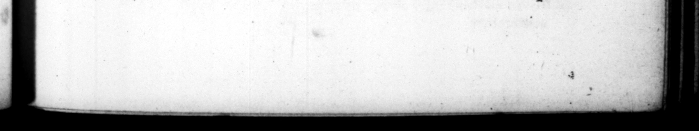

alterum levi exfilio ' Faris babuit: cum ille Agrippz juvenis nomine, aſperrimam de ſe epiſtolam in vulgus edidiſſet : hic convivio pleno proclamaſſer, Neque votum fobi neque animum deefſe confodjendi _ Qua dam vero nirione, cum Emilio Eliane Cordubenſi inter cetera crimina vel max ime objiceretur, quod male opinari de Ceſare ſoleret: converſus ad accuſatorem inquſe hoc mihi probes: f. anquit, mihi $ : [ach am, ſtiat Alianus & me linguam habere pura enim de eo loquar, Nec quidquam ultra aut ſtatim aut poſtea inquiſivit. Tiberio quoque de eadem re ſedulo violentius apud ſe per epiſtolam uerenti, ita reſcriplir, Stati tuæ, mi Tiberi, noli in hac re indulgere, & nimium indignari quemuam eſſe gui de me male loguatur. Satis eft enim, ſs hoc habemus ne quis nobis male facere poſit. 52. Templa quamvis ſciret etiam proconſulibus decerni ſolere : in nulla tamen — vincia, niſi communi ſuo Romæque no mine recepit; nam in urbe quidem pertinaciſſime abſtinuit hoc honore. àtque etiam argenteas ſtatuas * ſibi poſitas conflavit omnes: _ iis aureas Cortinas A— ini Palatino dedicavit. ictaturam, magna vi offerente populo, genu nixus, de jecta 12 toga, nudo pectore deprecatus eſt. and his breaſt expoſed, beg g d 53. Domini appellationein, ut maledictum & opprobrium ſemper exhorrait, Cum ſpectante eo ludos, pronuntiatum eſſet in mimo, 0 domi num æquum & bonum: & univeri quaſi de ipſo dictum exſultantes comprobaſſent : & tatim manu vultuq; indecoras adulationes repreſſit, & inſe ne ſimilis: Pelim, D. OCT Av. AUGUST. * 87 nire liſhed in the name of young Agvippa» 4 very ſcurrilous ag inſt him, - and the other declared openly at an entertainment, where there was a great deal of company, that he neither wanted inclination or courage to ſtab him. And in the tryal of Eni. Ans Alanus of Corduba, when 4 other crimes charged upon him,” this was particularly inſiſted upen, that he was uſed to u ar, turn · ing in 4 ſeeming paſſion to his accuſer, I wiſh, ſaid wa conld make that appear, I ſhall ler Kl tanns know that I have a tongue too, and return him more ill Jangnage than ever he gave me. IWor did he either then or at any time after make any further enquiry into the matter. And when Niberius in a letter to him comlained heavily about it, he returned im an anſwer in the following words. Do not, my dear Tiberius, Hive way to the heat of youth in this affair, or be in ſuch a mighty chafe, that any one ſhould reflect upon me. It's ſufficient, that we have it in our power, to prevent any one's doing ns a miſchief, 52, Tho) he knew it hat been mary to decree temples for the proconſuls, yet he would not, in the provinces, allow of any to be erec ted, but to the honour of himſelf and the city Rome in conjunction. But in the city it ſelf, be abſolutely refuſed any honmr of that find, He melted down all the fil. ver fatues that had been eretted for him, and purchaſed therewith * ſilver tripoſſes which he conſecrated to Apollo Palatinus, And when the common people impartuned him to accept the dietatorſhip, he fell upon one knee, and with his toga thrown from his (boulders, to be excuſed. 53. He always abhorred the title of lord, as a ſcandalous affront, And when in a mimick picce preſented in the theatre, the following words came wp, O juſt and gracious Lord, and the whole company with joy ſig ui ſied their approbatiom of them, as being applied to himſelf ; he both immediately put 4 ſtop to their indecent flattery, by the waving of his hand, and the ſevegucntt
